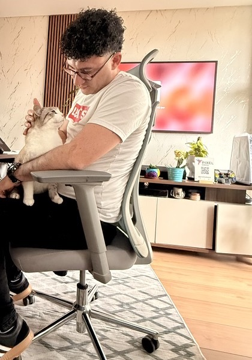
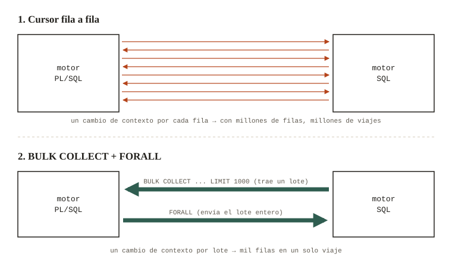

Bitácora técnica
Lo que 11 años en producción me enseñaron de Oracle
Estoy terminando Ingeniería Informática, pero llevo 11 años dando soporte N2/N3 y desarrollando en PL/SQL para una operación de facturación que no se apaga nunca. Aquí apunto lo que aprendí a golpes.

Entradas
-
Nº 01pl/sql · rendimiento

El cursor que tumbó un batch a las 3 a.m.
Un cursor fila a fila, una noche de batch y por qué mover lotes en vez de filas cambia todo.
leer entrada → · 4 min -
Nº 02índices · planes

Índices: cuando "más" es peor
Cómo funciona un índice B-tree, cuándo ayuda y por qué cada índice de más se paga en cada INSERT.
leer entrada → · 5 min -
Nº 03excepciones · logging

Errores de PL/SQL que todos cometemos (y yo también)
WHEN OTHERS THEN NULL, logs que se pierden con el rollback y cómo dejar rastro con una transacción autónoma.
leer entrada → · 4 min